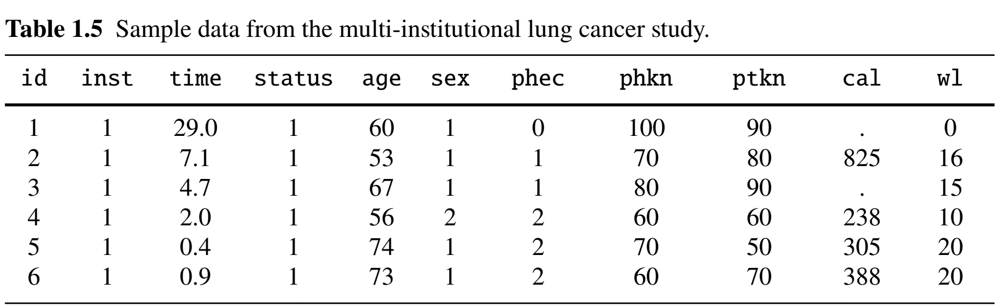
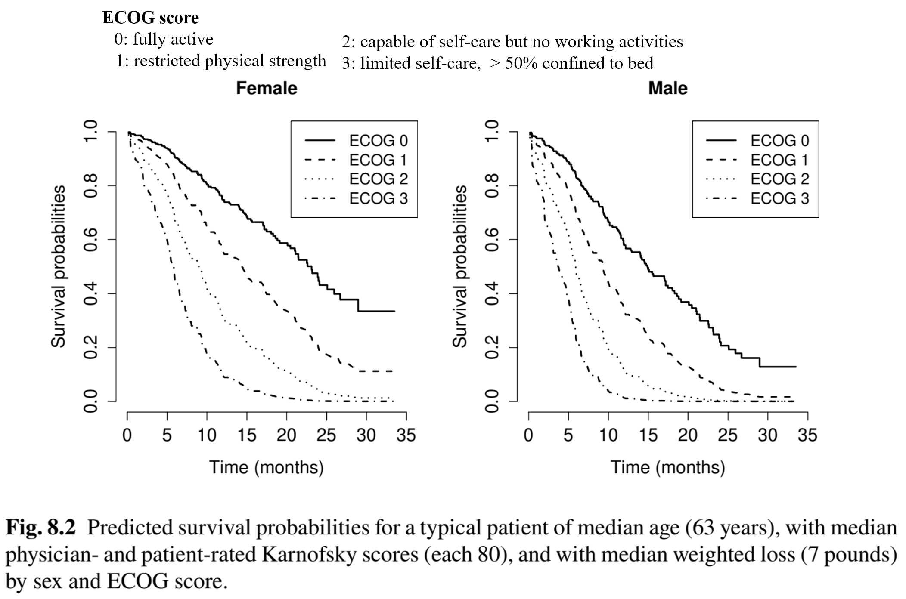
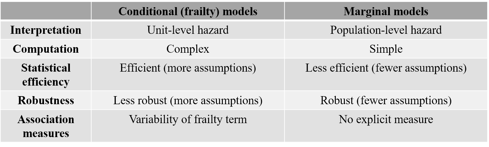
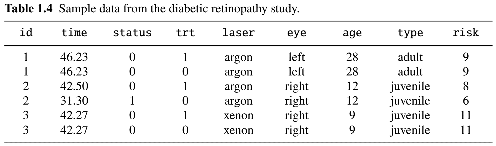
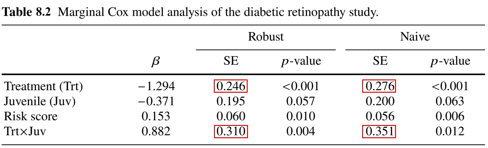
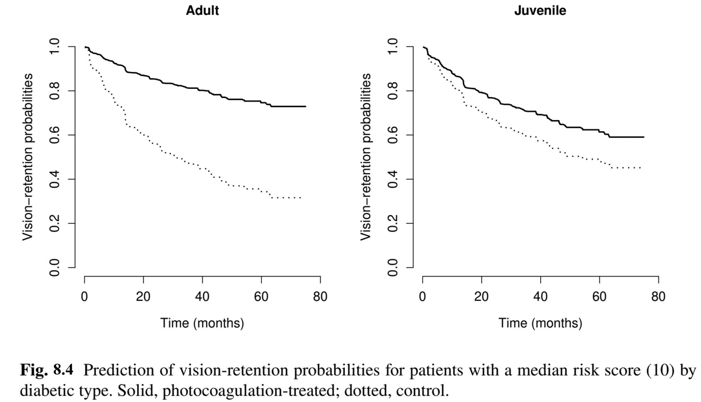

obj <- coxph(Surv(time, status) ~ covariates +
frailty(id, distribution = "gamma"))Applied Survival Analysis
Chapter 8 - Multivariate Failure Times
Outline
Introduction to frailty models
Multivariate Cox model with shared frailty
Example: A multi-center lung cancer study
Marginal models and robust inference
Example: the diabetic retinopathy study
\[\newcommand{\d}{{\rm d}}\] \[\newcommand{\T}{{\rm T}}\] \[\newcommand{\dd}{{\rm d}}\] \[\newcommand{\pr}{{\rm pr}}\] \[\newcommand{\var}{{\rm var}}\] \[\newcommand{\se}{{\rm se}}\] \[\newcommand{\indep}{\perp \!\!\! \perp}\] \[\newcommand{\Pn}{n^{-1}\sum_{i=1}^n}\]
Frailty/Copula Models
Multivariate Failure Times
- Two types of scenario
- Multiple events on same subject
- Cardiovascular endpoints: heart failure, myocardio-infarction (MI; heart attack), stroke, etc.
- Clustering within group
- Group: region, study center, family, pair of twins
- Common challenge
- Correlation within same unit (subject, group, etc.)
- Multiple events on same subject
- Modelling strategies
- Conditional (shared-frailty) models
- Marginal (component-wise) models
Frailty Models: Concept
- Target of inference: \(T=(T_1,\ldots, T_K)\)
- Multiple failures (same or different types) in same unit (subject or group)
- Unit-specific frailty \(\xi\)
- Latent (unobserved) factor shared by components within unit \(\to\) dependence
- \(T_k\) \((k=1,\ldots, K)\): mutually independent given \(\xi\) with hazard \(\xi\eta'_k(t)\) \[\begin{equation}\label{eq:multi:fr_surv}
\pr(T_1>t_1,\ldots,T_K>t_K\mid \xi)=\exp\left\{-\xi \sum_{k=1}^K \eta_k(t_k)\right\}
\end{equation}\]
- \(\xi\): nonnegative random variable with \(E(\xi)=1\)
- \(\var(\xi)\uparrow\) \(\to\) greater between-unit variations \(\to\) stronger within-unit correlations
- \(\eta_k(t)\): conditional cumulative hazard given frailty
Frailty Models: Joint Distribution
- Marginal distribution
- Joint survival (\(\xi\sim g(\cdot \gamma)\)) \[\begin{align}\label{eq:multi:joint_surv} S(t_1,\ldots, t_K)=&\pr(T_1>t_1,\ldots,T_K>t_K)\notag\\ =&\int_0^\infty\pr(T_1>t_1,\ldots,T_K>t_K\mid \xi)g(\xi;\gamma)\dd\xi\notag\\ =&\int_0^\infty\exp\left\{-\xi \sum_{k=1}^K \eta_k(t_k)\right\}g(\xi;\gamma)\dd\xi, \end{align}\]
- Component-wise survival \[S_k(t)=\int_0^\infty\exp\left\{-\xi \eta_k(t)\right\}g(\xi;\gamma)\dd\xi\]
- Component-wise cumulative hazard: \[\Lambda_k(t) = -\log S_k(t)=-\log\int_0^\infty\exp\left\{-\xi \eta_k(t)\right\}g(\xi;\gamma)\dd\xi\neq \eta_k(t)\]
Examples: Gamma Frailty (I)
- Parametric families for \(\xi\)
- Gamma
- Positive stable
- Inverse Gaussian
- Log-normal
- Gamma frailty model
- \(\xi\sim\mbox{Gamma}(\gamma, \gamma)\) \((\gamma >0)\) \[
g(u;\gamma)=\Gamma(\gamma)^{-1}\gamma^\gamma u^{\gamma-1}\exp\left(-\gamma u\right),\hspace{3mm}u>0
\]
- \(\Gamma(\gamma)=\int_0^\infty x^{\gamma-1}\exp(-x)\dd x\)
- \(E(\xi) = 1\), \(\var(\xi)=\gamma^{-1}\) (Exercise)
- \(\xi\sim\mbox{Gamma}(\gamma, \gamma)\) \((\gamma >0)\) \[
g(u;\gamma)=\Gamma(\gamma)^{-1}\gamma^\gamma u^{\gamma-1}\exp\left(-\gamma u\right),\hspace{3mm}u>0
\]
Examples: Gamma Frailty (II)
- Implied joint marginal \[
S(t_1,\ldots, t_K)=\left\{1+\gamma^{-1}\sum_{k=1}^K \eta_k(t_k)\right\}^{-\gamma}
\]
- Correlated for \(0<\gamma<\infty\)
- As \(\gamma\to\infty\), i.e., \(\var(\xi)\downarrow 0\), \(S(t_1,\ldots, t_K)\to\exp\{-\sum_{k=1}^K \eta_k(t_k)\}\)
- Component-wise marginals \[S_k(t)=\left\{1+\gamma^{-1} \eta_k(t)\right\}^{-\gamma}
\]
- Marginal cumulative hazard: \(\Lambda_k(t)=\gamma\log\left\{1+\gamma^{-1} \eta_k(t)\right\}\neq\eta_k(t)\)
Examples: Positive Stable Frailty
- One-sided Stable distribution
- No explicit form for \(g(\cdot;\gamma)\) \((0<\gamma\leq 1)\)
- Laplace transform \[\begin{equation}\label{eq:multi:stable_laplace} \int_0^\infty\exp(-x\xi)g(\xi;\gamma)\dd\xi=\exp(-x^\gamma) \end{equation}\]
- Implies joint marginal \[\begin{equation}\label{eq:multi:stable_joint_survival}
S(t_1,\ldots, t_K)=\int_0^\infty\exp\left\{-\xi \sum_{k=1}^K \eta_k(t_k)\right\}g(\xi;\gamma)\dd\xi=\exp\left[-\left\{\sum_{k=1}^K \eta_k(t_k)\right\}^\gamma\right]
\end{equation}\]
- \(\gamma\uparrow 1\) \(\to\) independence
- Marginal cumulative hazard: \(\Lambda_k(t)=\eta_k(t_k)^\gamma\neq\eta_k(t)\)
- Does preserve PH structure in regression
Copula Models
- Copula: Joint distribution in terms of component marginals
Clayton copula
- Induced by Gamma frailty \[ S(t_1,\ldots, t_K) = \left\{\sum_{k=1}^KS_k(t_k)^{-1/\gamma}-K+1\right\}^{-\gamma} \]
Gumbel-Hougaard copula
- Induced by positive-stable frailty \[ S(t_1,\ldots, t_K) = \exp\left(-\left[\sum_{k=1}^K\{-\log S_k(t_k)\}^{1/\gamma}\right]^\gamma\right) \]
One Sample: Data
- Observed data \[
(X_{ki}, \delta_{ki}),\hspace{5mm} k=1,\ldots, K;\,\,\, i=1,\ldots, n
\]
- \(X_{ki}=\min(T_{ki}, C_{ki})\)
- \(T_{ki}\): \(T_k\) in \(i\)th unit; \(C_{ki}\): censoring time for \(T_{ki}\)
- \(\delta_{ki} = I(T_{ki}\leq C_{ki})\)
- \(N_{ki}(t) = I(X_{ki}\leq t, \delta_{ki} = 1)\)
- Parameters: \(\theta=(\eta_1,\ldots, \eta_K, \gamma)\)
- \(\eta_1,\ldots, \eta_K\): component-wise conditional cumulative hazards
- \(\gamma\): frailty distribution parameter
One Sample: Estimation
- Expectation-Maximization (EM) algorithm
- With \(\xi\) as “missing” data
- \(E\)-step (numerical integration) \[\begin{equation}\label{eq:multi:estep} \hat\xi_i^{(j+1)}=E\{\xi_i\mid (X_{ki}, \delta_{ki}): k=1,\ldots, K; \theta^{(j)}\} \end{equation}\]
- \(M\)-step (weighted Nelsen-Aalen estimator; standard MLE) \[\begin{equation}\label{eq:multi:mstep_H} \eta_k^{(j+1)}(t)=\int_0^t\frac{\sum_{i=1}^n\dd N_{ki}(u)}{\sum_{i=1}^n\hat\xi_i^{(j+1)}I(X_{ki}\geq u)} \hspace{5mm}(k=1,\ldots, K) \end{equation}\] \[ \gamma^{(j+1)}=\arg\max_{\gamma}\sum_{i=1}^n\log g(\hat\xi_i^{(j+1)};\gamma) \]
Frailty Cox Models
Model Specification
- Frailty-conditioned Cox models
\(T_1,\ldots, T_K\) mutually independent given \(Z\) and \(\xi\)
Conditional component-wise model \[\begin{align}\label{eq:multi:ph_cond} \lambda_k(t\mid Z, \xi)&= \xi\exp(\beta_k^\T Z) \eta_{k0}'(t)\\ \pr(T_k>t\mid Z,\xi)&=\exp\left\{-\xi\exp(\beta_k^\T Z) \eta_{k0}(t)\right\} \end{align}\]
Conditional joint survival \[\begin{equation}\label{eq:multi:fr_surv_reg} \pr(T_1>t_1,\ldots,T_K>t_K\mid Z,\xi)=\exp\left\{-\xi\sum_{k=1}^K\exp(\beta_k^\T Z) \eta_{k0}(t_k)\right\} \end{equation}\]
Implied Marginals
- Gamma frailty
- Non-proportional hazards \[ \Lambda_k(t\mid Z)=\gamma\log\left\{1+\gamma^{-1} \exp(\beta_k^\T Z)\eta_{k0}(t)\right\} \]
- Positive-stable frailty
- Proportional hazards \[ \Lambda_k(t\mid Z)=\exp(\gamma\beta_k^\T Z)\eta_{k0}(t)^\gamma \]
- Special case where PH structure is preserved
Parametrizations
- Same failure clustered in group \[\begin{align} \beta_1&=\cdots=\beta_K=:\beta\\ \eta_{10}(\cdot)&=\cdots=\eta_{K0}(\cdot)=:\eta_0(\cdot) \end{align}\]
Different failure types \[\begin{align} &\mbox{Different }\beta_k\\ &\mbox{Different }\eta_{k0}(\cdot) \end{align}\]
- Same covariate effect: \(\beta_1=\cdots=\beta_K=:\beta\)
- e.g., beta blocker has same (relative) reduction in risk of all MACEs
Estimation and Inference
- Estimation
- EM algorithm treating the \(\xi\) as missing data
- \(E\)-step: \(\hat\xi_i^{(j+1)}=E\{\xi_i\mid (X_{ki}, \delta_{ki}, Z_i): k=1,\ldots, K; \theta^{(j)}\}\)
- \(M\)-step: \(\hat\xi_i^{(j+1)}\)-weighted partial likelihood for \(\beta_k^{(j+1)}\) + Breslow estimator for \(\eta_{k0}^{(j+1)}(t)\)
- Testing covariate effect on multiple components
- \(Z_{\cdot 1}\): main treatment of interest \[ H_0: \beta_{11}=\beta_{21}=\cdots=\beta_{K1}=0 \]
- \(\chi_K^2\): chi-square test with \(𝐾\) degrees of freedom
Software: survival::coxph() (I)
- Scenario 1: Gamma-frailty with same \(\beta\) and \(\eta_0\)
- Same failure grouped in cluster
id obj$frail: estimated \(\log(\hat\xi_i)\) for each unit
- Same failure grouped in cluster
- Scenario 2: Gamma-frailty with same \(\beta\) and different \(\eta_{k0}\)
- Different failure types
enumin unitidwith same covariate effect - Stratified Cox model by component (single \(\beta\); component- specific \(\eta_{k0}\))
- Different failure types
coxph(Surv(time, status) ~ covariates + strata(enum)
+ frailty(id, distribution = "gamma"))Software: survival::coxph() (II)
- Scenario 3: Gamma-frailty with different \(\beta_k\) and \(\eta_{k0}\)
- Different failure types
enumin unitidwith different covariate effects - Component specific \(\beta_k\) and \(\eta_{k0}\)
- Different failure types
coxph(Surv(time, status) ~ covariates * strata(enum) +
frailty(id, distribution = "gamma"))
Problem
How to set up a model of the form: \[ \lambda_k(t\mid Z, \xi) \;=\; \xi\exp\left(\beta_k^\T Z_{(1)} + \gamma^\T Z_{(2)}\right) \eta_{k0}'(t), \] where the effects of \(Z_{(1)}\) are component-specific while those of \(Z_{(2)}\) are component-invariant?
Multi-Institution Lung Cancer Study
Study Background
- Study information
- Population: 228 lung cancer patients grouped in 18 institutions
- Endpoint: Death (link to follow-up plot)
- Risk factors
- Age (years); sex (1: male; 2: female); weight loss (pounds) in last six months
- Physician-rated ECOG (0–3) and Karnofsky scores (50–100); Patient-rated Karnofsky score (50–100) 
Cox Regression: Inference
Gamma frailty for correlation within institution
- sex and physician-rated ECOG strongly predictive of mortality
# Fit a Cox model with institution-specific frailty obj <- coxph(Surv(time, status) ~ age + factor(sex) + phec + phkn + ptkn + wl + frailty(inst, distribution = "gamma"), data = df) summary(obj) #> exp(coef) exp(-coef) lower .95 upper .95 #> age 1.0133 0.9869 0.9938 1.0331 #> factor(sex)2 0.5333 1.8751 0.3751 0.7582 #> phec 1.9984 0.5004 1.3460 2.9669 #> phkn 1.0204 0.9800 1.0002 1.0410 #> ptkn 0.9855 1.0147 0.9715 0.9998 #> wl 0.9870 1.0132 0.9735 1.0006 #> Iterations: 9 outer, 35 Newton-Raphson #> Variance of random effect= 0.008592303 I-likelihood = -635.5
Cox Regression: Prediction

Marginal Models
Marginal Cox Models
- Marginal models
- Focusing on component-wise marginal distributions (averaged across units)
- No specification of joint distribution between components
- Account for correlation empirically
- Marginal Cox model \[\begin{equation}\label{eq:multi:marg_cox}
\Lambda_k(t\mid Z)=\exp(\beta_k^\T Z)\Lambda_{k0}(t)
\end{equation}\]
- \(\beta_k\): population-averaged log-hazard ratios
- Not comparable to unit-level \(\beta_k\) in frailty model
- For same-type failure, constrain \(\beta_1=\cdots=\beta_K\) and \(\Lambda_{10}=\cdots=\Lambda_{K0}\)
- \(\beta_k\): population-averaged log-hazard ratios
Estimation (I)
- Free \(\beta_k\) & \(\Lambda_{k0}\)
- Solve \(U_{nk}(\hat\beta_k)=0\) \[\begin{align}\label{eq:multi:eek} U_{nk}(\beta_k)&=\Pn\int_0^\infty\left\{Z_i- \frac{\sum_{j=1}^nI(X_{kj}\geq t)Z_j\exp(\beta_k^\T Z_j)}{\sum_{j=1}^nI(X_{kj}\geq t)\exp(\beta_k^\T Z_j)}\right\}\dd N_{ki}(t) \end{align}\]
- \(\hat\Lambda_{k0}(t)=\int_0^t\frac{\sum_{i=1}^n\dd N_{ki}(u)}{\sum_{i=1}^n I(X_{ki}\geq u)\exp(\hat\beta_k^\T Z_i)}\)
- Same \(\beta\) & free \(\Lambda_{k0}\)
- Solve \(U_{n}(\hat\beta)=0\) \[\begin{align}\label{eq:multi:ee_stra} U_{n}(\beta)&=\Pn\sum_{k=1}^K\int_0^\infty\left\{Z_i- \frac{\sum_{j=1}^nI(X_{kj}\geq t)Z_j\exp(\beta^\T Z_j)}{\sum_{j=1}^nI(X_{kj}\geq t)\exp(\beta^\T Z_j)}\right\}\dd N_{ki}(t) \end{align}\]
Estimation (II)
- Same \(\beta\) & \(\Lambda_{0}\)
- Solve \(U_{n}(\hat\beta)=0\) \[\begin{align}\label{eq:multi:ee_unstra} U_{n}(\beta)&=\Pn\sum_{k=1}^K\int_0^\infty\left\{Z_i- \frac{\sum_{k'=1}^K\sum_{j=1}^nI(X_{k'j}\geq t)Z_j\exp(\beta^\T Z_j)}{\sum_{k'=1}^K\sum_{j=1}^nI(X_{k'j}\geq t)\exp(\beta^\T Z_j)}\right\}\times\dd N_{ki}(t) \end{align}\]
Exercise: Breslow estimator
Construct proper Breslow estimators for the baseline function(s) given \(\hat\beta\) under:
- Same \(\beta\) & free \(\Lambda_{k0}\)
- Same \(\beta\) & \(\Lambda_{0}\)
Robust Variance: Sandwitch
- Martingale not working
- Conditional event rate given past \(\neq\) modeling target
- Between-component dependence not specified
- Robust variance
- Works regardless of underlying dependence structure
- Sandwich estimator \[
\hat\var(\hat\beta)=n^{-1}\hat A_n^{-1}\hat{\mathcal I}_n \hat A_n^{\T-1}
\]
- \(\hat A_n=\partial U_n(\hat\beta)/\partial\beta\)
- \(\hat{\mathcal I}_n=\hat\var\{\sqrt n U_n(\beta)\}\): sample variance based on sum of independent units
Conditional vs Marginal Models
- Comparison

Software: survival::coxph() (I)
- Scenario 1: Marginal model with same \(\beta\) and \(\Lambda_0\)
- Same failure grouped in cluster
id
- Same failure grouped in cluster
coxph(Surv(time, status) ~ covariates + cluster(id))- Scenario 2: Marginal model with same \(\beta\) and different \(\Lambda_{k0}\)
- Different failure types
enumin unitidwith same covariate effect- Stratified Cox model by component (single \(\beta\); component- specific \(\Lambda_{k0}\))
- Different failure types
coxph(Surv(time, status) ~ covariates + strata(enum)
+ cluster(id))Software: survival::coxph() (II)
- Scenario 3: Marginal model with different \(\beta_k\) and \(\Lambda_{k0}\)
- Different failure types
enumin unitidwith different covariate effects - Component specific \(\beta_k\) and \(\Lambda_{k0}\)
- Different failure types
coxph(Surv(time, status) ~ covariates * strata(enum) +
cluster(id))Diabetic Retinopathy Study
Study Background
- Study information
Design: randomized controlled trial of 197 diabetic patients (plot)
- one eye receiving photocoagulation
- the other eye left untreated as control
Endpoint: Onset of blindness
- Whether treatment effect depends on type of diabetes (adult or juvenile)

Marginal Cox Regression: Inference (I)
Marginal Cox model to handle correlation between eyes
- Treatment effect differs by disease type substantially
# Fit a bivariate marginal Cox model with treatment, diabetic type # risk score, and treatment*type interaction as covariates obj <- coxph(Surv(time, status) ~ trt + type + trt : type + risk + cluster(id), data = data) summary(obj) # coef exp(coef) se(coef) robust se z Pr(>|z|) # trt -1.29375 0.27424 0.27552 0.24614 -5.256 1.47e-07 *** # typejuvenile -0.37115 0.68994 0.19958 0.19535 -1.900 0.05745 . # risk 0.15342 1.16582 0.05636 0.05981 2.565 0.01031 * # trt:typejuvenile 0.88241 2.41672 0.35124 0.30962 2.850 0.00437 **
Marginal Cox Regression: Inference (II)
- Efficiency gain by accounting for correlation
- Robust: sandwich estimator
- Naive: assuming two eyes are independent

Marginal Cox Regression: Results
- Treatment effect depends on disease type
- Much greater reduction in risk of blindness of adult (type II?) than juvenile patients (type I?) (p-value = 0.004)
| Diabetic type | Hazard ratio |
|---|---|
| Adult | \[ \exp(-1.294) = 27.4\% \] |
| Juvenile | \[ \exp(-1.294 + 0.882)= 66.2\% \] |
Marginal Cox Regression: Prediction

Conclusion
Notes (I)
- Comparison with longitudinal analysis
| Multivariate events | Longitudinal data |
|---|---|
| Shared-frailty models | Mixed-effects models |
| Marginal models | Marginal models (GEE) |
- Frailty models = random intercepts \(\to\) random slopes \[
\pr(T_k>t\mid Z, b)=\exp\left\{-\exp(b^\T\tilde Z+\beta_k^\T Z)\eta_{k0}(t)\right\}
\]
- \(\tilde Z\) a subset of \(Z\)
- \(b\sim_\mbox{e.g.} MVN(0, \Sigma)\)
Notes (II)
- Other frailty distributions
- Log-normal:
coxph(Surv(time, status) ~ covariates + frailty(id, distribution = "gaussian"))
- Log-normal:
frailtyEMpackageemfrail(): EM algorithm for frailty modelsemfrail_dist(): specify frailty distribution- Positive stable:
dist = "stable" - Inverse Gaussian:
dist = "pvf"
library(frailtyEM) # Frailty model via emfrail() obj <- emfrail(Surv(time, status) ~ covariates + cluster(id) + distribution = emfrail_dist(dist = "pvf"))- Positive stable:
Notes (III)
- Texts
Summary
- Shared-frailty Cox model \[
\pr(T_k>t\mid Z,\xi)=\exp\left\{-\xi\exp(\beta_k^\T Z) \eta_{k0}(t)\right\}
\]
- Unit-specific \(\xi\) induces correlation
coxph(Surv(time, status) ~ covariates + frailty(id, distribution = "gamma"))
- Marginal Cox model \[
\Lambda_k(t\mid Z)=\exp(\beta_k^\T Z)\Lambda_{k0}(t)
\]
- Robust sandwich estimator to account for correlation empirically
coxph(Surv(time, status) ~ covariates + cluster(id))